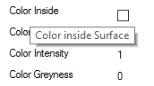

The material tab allows to set some rendering parameters.

Click on one of the images os the left side activates the default parameter sets. The grey numbers on the right side set the corresponding material parameter to this default value. The buttons -,+,-- or ++ decrease or increase the corresponding material parameter. Placing the mouse cursor over one of the paramter texts shows a short description.

If the current scene is rendered in preview or at full size, parameter changes are applyed directly to the rendering. While updating the new render parameters the buttons Start, Preview and Update Material are deactivated while rendering.

Not all material parameters are available in the material tab. The full set of parameters can be edited in the data tab by activation one of the nodes: Renderer, BackColor, ColorFactor or Light.